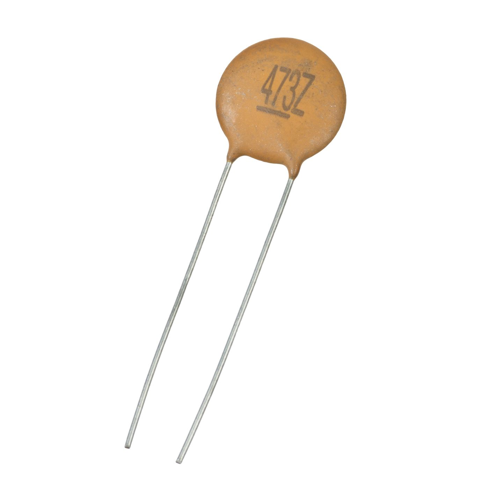
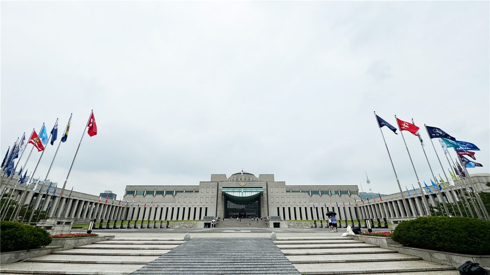
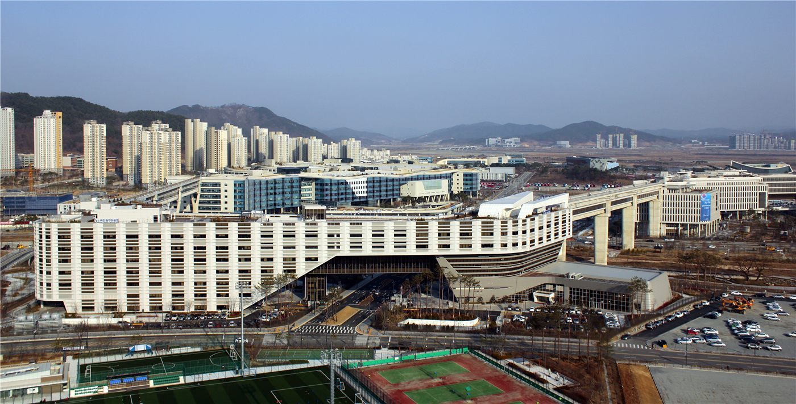
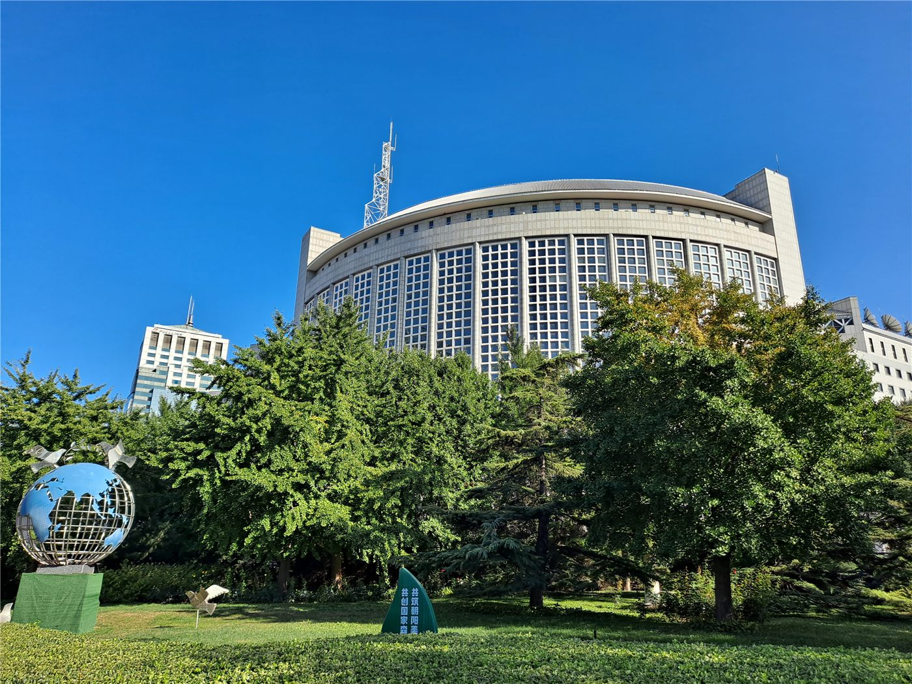
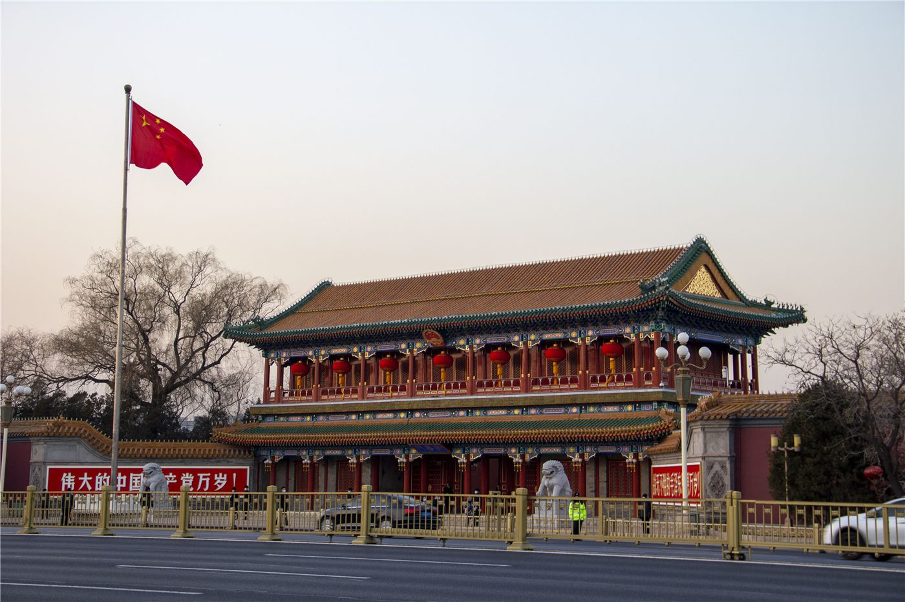
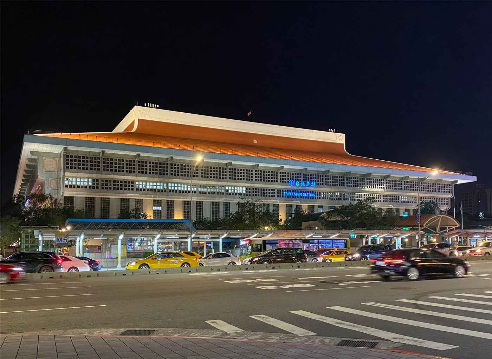
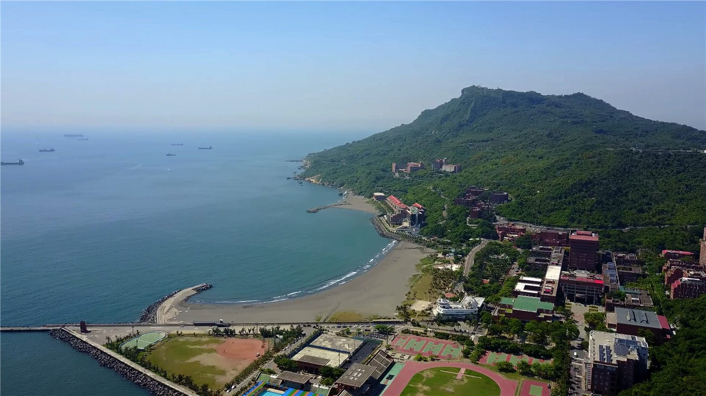
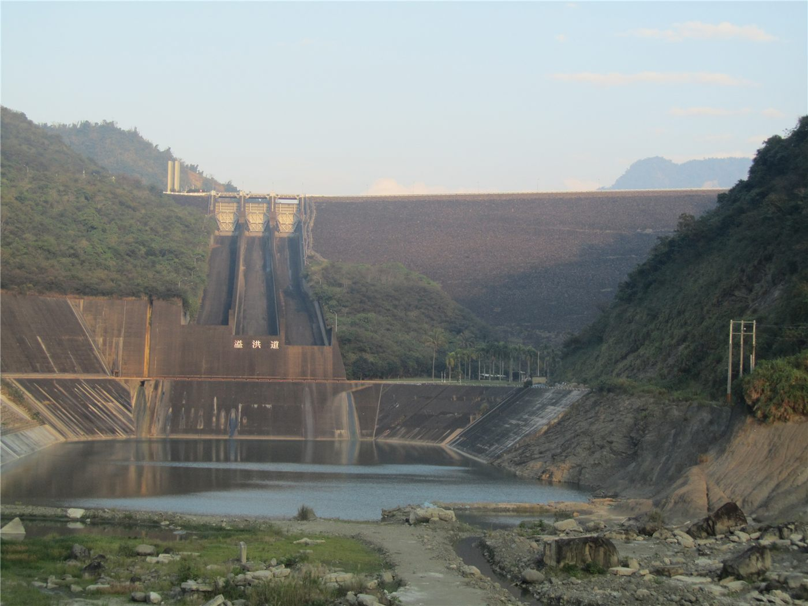
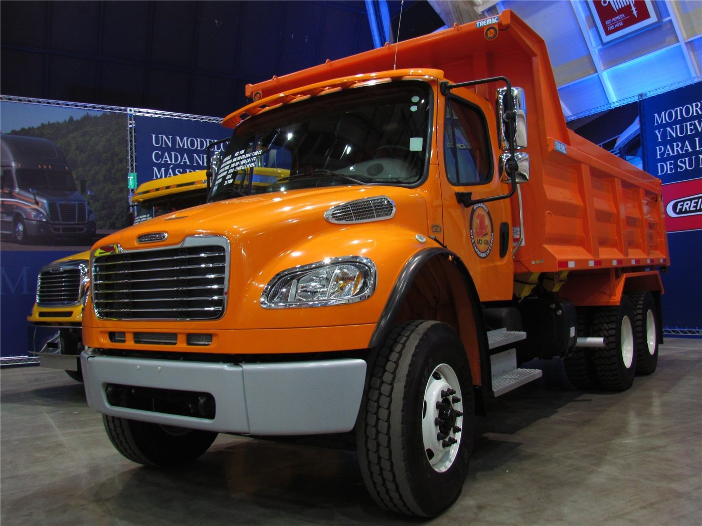
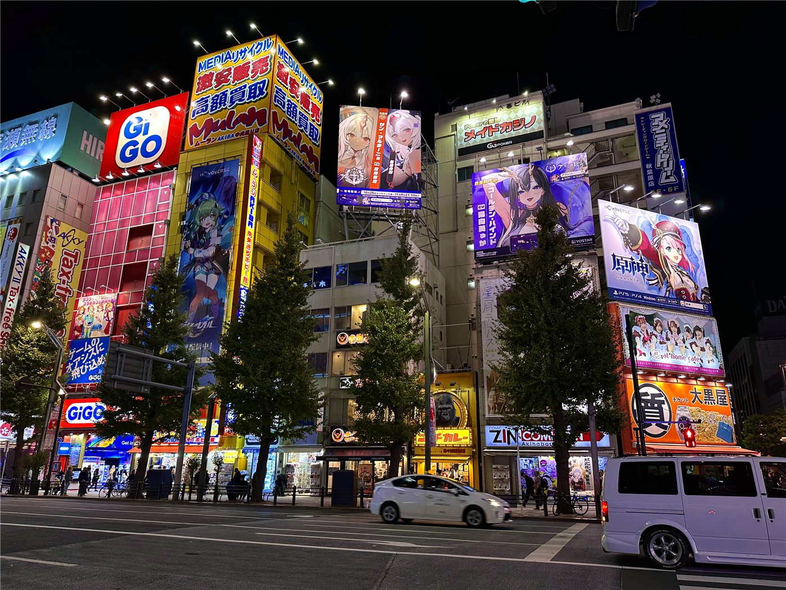

橋한국
한국이재명 정부 2년차, 728조 예산 'AI 대전환'에 건다
정부가 2026년을 'AI 대전환 원년'으로 선포하고 728조 원 슈퍼 확장 재정을 편성했다. AI 3대 강국 도약이 목표지만, 고환율·재정건전성 논쟁이 동시에 불붙는다.
정부가 2026년을 'AI 대전환 원년'으로 선포하고 728조 원 슈퍼 확장 재정을 편성했다. AI 3대 강국 도약이 목표지만, 고환율·재정건전성 논쟁이 동시에 불붙는다.

대통령 선거 정확히 1년 만에 치러진 전국 단위 선거. 지역 권력 지형과 국정 동력에 영향.

올해 1월 한중 정상회담으로 양국 관계가 9년 만에 정상 궤도에 올랐다. 경제·외교안보 대화 채널이 복원되고, 인적·문화 교류가 확대된다.

정부가 향후 10년간 총 4,755조 원 규모의 투자를 끌어내 전국을 다섯 개 ‘메가 권역’과 세 개 특별구역으로 묶는 ‘5극3특’ 균형발전 구상의 닻을 올렸다. 첨단산업 거점을 지역에 분산해 수도권 집중을 풀겠다는 청사진이다. 재한 화인 사회의 생활 기반인 인천·부산·대구 등도 직접적 영향권에 든다.

삼성과 SK가 호남 지역에 반도체 공장 4기를 신설하는 계획이 균형발전 구상의 핵심으로 떠올랐다. 메모리 수요 대응과 지역 거점 육성을 함께 노린다.

정부가 울산·동해·세종 등에 약 550조 원을 투입해 인공지능 데이터센터를 구축한다. AI 시대의 ‘디지털 인프라’를 지역에 깔겠다는 구상이다.

정부가 제조업에 인공지능을 결합해 부가가치 100조 원을 창출하겠다는 청사진을 공개했다. 한국 산업의 체질을 ‘AI 제조’로 바꾸겠다는 구상이다.

이재명 대통령이 대규모 투자에 나선 주요 기업 총수들을 ‘국가 영웅’으로 치켜세우며 깊이 고개 숙여 사의를 표했다. 민관 협력을 통한 균형발전 의지를 상징적으로 드러냈다.

대규모 산업 투자에 따른 용수 부족 우려에 정부가 “여러 수원을 연결하면 하루 100만 톤을 공급할 수 있다”고 밝혔다. 반도체·데이터센터의 핵심 인프라인 물 확보가 과제로 떠올랐다.

더불어민주당이 중앙선거관리위원회를 겨냥한 특별검사 도입을 당론으로 추진하기로 했다. 야당은 ‘관치 개입’이라며 국정조사로 맞서겠다고 밝혔다.

국회 원 구성을 둘러싸고 여야가 ‘끝장 대치’를 이어갔다. 법제사법위원회 배분이 최대 쟁점으로, 협상이 교착에 빠졌다.

국방부가 군 수사 기능을 조사본부로 모으면서, 권한 집중에 따른 부작용을 막기 위한 법무·감찰 강화 등 내부 견제장치를 함께 마련했다.

정부의 ‘5극3특’ 균형발전 구상에 호남·충남은 환영했지만, 대구·경북(TK) 등 일부 지역은 ‘편중’을 우려하며 반발했다. 같은 정책을 두고 지역마다 체감 온도가 갈렸다.

중국 외교부, EU와의 경제·통상 관계는 상호이익이라며 보호무역 자제 촉구.

왕이 외교부장, 글로벌 거버넌스 개혁 방향 제시. 중국, 7월 세계 AI 회의 개최 예정.

상무부 집계, 서비스 교역 확대 지속. 디지털·관광·운송이 견인.

수출 증가폭이 둔화되며 흑자가 축소됐다. 대외 수요 약화 신호로 읽힌다.

시진핑 중국 국가주석이 벨라루스 대통령 루카셴코와 회견하고 경제·무역·인문 등 전방위 협력을 심화하기로 했다. 양국은 다자주의와 개발도상국 연대의 중요성에 공감했다.

중국이 슈퍼컴퓨터 성능에서 세계 정상에 다시 올랐다. 인공지능·기후·신소재 연구의 토대가 되는 고성능 연산 능력의 경쟁이 한층 뜨거워지고 있다.

중국 산둥성 룽청의 해양 어업·양식이 ‘블루 그래너리(푸른 곡창)’로 주목받고 있다. 바다를 식량 생산 기지로 키우는 해양경제의 한 단면이다.

중국이 일부 일본 기업·기관을 수출통제 관리 명단에 올렸다. 외교부는 ‘정당하고 합법적인 조치’라는 입장을 밝혔다. 한·일·대만 공급망에도 파장이 주목된다.

중국 외교부가 태평양 도서국과의 협력이 ‘투명하고 호혜적’이라고 밝혔다. 기후·개발·해양 분야에서 도서국과의 실질 협력을 이어가겠다는 입장이다.

중국이 베네수엘라에 1억 위안 규모의 긴급 무상 물자 원조를 추가하기로 했다. 외교부는 재건과 민생 지원을 위한 인도적 협력이라고 설명했다.

중국 국무원이 향후 5년의 교육 발전 방향을 담은 ‘15차 5개년 규획’을 내놨다. 인재 양성과 교육 질 제고, 디지털 전환이 핵심 축으로 거론된다.

리창 중국 총리가 국무원 상무회의를 주재해 경제 운용과 민생 과제를 점검했다. 내수 확대와 시장 활력 제고가 주요 논의 대상으로 거론됐다.

중국이 ‘강대한 국내시장’ 건설을 위한 조사·협의 좌담회를 열고 내수 확대 방안을 논의했다. 외부 불확실성 속에서 내수 기반을 다지려는 흐름이다.

중국 경제를 둘러싸고 ‘중국 충격’이 아니라 ‘중국 기회 2.0’이라는 시각이 제기됐다. 거대한 시장과 ‘규모화 혁신’이 세계 경제에 기회가 될 수 있다는 주장이다.

취임 2년을 맞은 라이칭더 총통이 평화·안정과 민생을 국정 기조로 제시했다. 대만은 인재 유치 제도를 본격 시행 중이다.

해외 화인 청년의 취업·정착 문이 넓어졌다. 졸업생은 허가 없이 2년 근무, 전문인력은 1년 거주 후 영주 신청.

양안경제협력기본협정(ECFA)을 통한 대만의 대중국 수출이 사상 최저 수준으로 떨어졌다. 공급망 재편과 수출 다변화 흐름 속에서 양안 경제 관계의 구조가 바뀌고 있다는 신호다.

TSMC의 실적 설명회(법설회)를 앞두고 외국계 증권사들이 목표주가를 잇따라 올리며 ‘마지막 탑승’ 분위기를 띄웠다. AI 반도체 수요 기대가 배경이다.

유럽발 폭염 위기 속에 대만이 처음으로 고온 대응 도상연습(兵推)을 실시했다. 기후 위기를 ‘안보 사안’처럼 다루는 흐름이 자리 잡고 있다.

폭염에 맞서 대만 각지가 ‘항열(抗熱) 작전’에 나섰다. 보행자 대기 시간을 줄이려 신호를 조정하고, 교차로에 대형 차양막을 설치하는 등 생활 밀착형 대책이 펼쳐진다.

대만 야당 국민당이 독자적인 드론(무인기) 관련 법안을 추진하는 것으로 전해졌다. 안전·산업·안보가 얽힌 무인기 규율 논의가 본격화하고 있다.

신베이시가 산잉(三鶯)선 MRT에 하카 문화와 예술을 입힌 테마 열차를 선보였다. 대중교통에 지역 문화를 녹여 ‘움직이는 갤러리’를 만든 시도다.

대만에서 국민투표(공민투표)를 몇 건까지 동시에 부치느냐를 둘러싼 논쟁이 일고 있다. 한 여론 전문가는 “1건이면 적당하고 3건은 감당하기 어렵다”고 지적했다.

대만 대학에서 학과별 성비 불균형이 여전한 것으로 나타났다. 특히 정보통신(ICT) 계열의 여학생 비율은 약 30%에 머물렀다.

집중호우로 침수 피해가 발생한 타이난시가 주택·점포에 대한 침수 보조를 확대했다. 일정 높이 이상 침수된 가구·상점에 위로금을 지급한다.
대만이 불법 촬영을 한 중국인 영상 블로거(브이로거)에게 2년간 입경 금지 처분을 내렸다. 규정 위반에 대한 명확한 행정 조치라는 평가다.

백악관이 국가정보국장 대행을 새로 지명하고, 법무부는 일부 정책 방향을 정리했다. 대외·통상 변수도 화인 경제에 파급.

EU 지도자들이 우크라이나 지원, 2028~2034 예산, 방위·이민을 의제로 올렸다. 올해 회원국 8곳이 총선을 치른다.

7일간 본토·카나리아 제도 순방.

그레이트니코바르 섬 항만·공항·신도시 계획.

독일 북부의 한 소도시 아동복지센터에서 총격이 벌어져 여러 명이 숨졌다. 경찰은 용의자를 체포했으며, 자녀 양육권 다툼이 배경일 가능성을 들여다보고 있다. 유럽에서 드문 총기 난사에 지역사회가 충격에 빠졌다.

미국 연방대법원이 같은 날 두 건의 판결로 대통령의 행정 권한을 확대하면서도 연방준비제도(Fed)의 독립성은 보호했다. 시장은 통화정책 불확실성이 줄었다고 받아들였다.

핀란드 대통령이 우크라이나와 러시아에 60일간의 정전을 제안하며 협상 동력을 살리자고 했다. 그는 우크라이나의 전선 상황이 비교적 안정적이어서 협상에 유리하다고 평가했다.

세계 2위급 희토류 매장량을 가진 내륙국 몽골을 두고 중국과 일본이 자원·외교 경쟁을 벌이고 있다. 공급망 다변화를 노리는 일본과 인접 우위를 가진 중국의 셈법이 교차한다.

바다가 없는 몽골이 수출입 비용을 줄이기 위해 새로운 물류 회랑을 구상하고 있다. 철도와 항만 연계로 ‘내륙의 한계’를 넘으려는 시도다.
인도에서 10분 내외 초고속 배송을 내세운 퀵커머스가 폭발적으로 성장하고 있다. 도시 소비자의 기대치가 빠르게 높아지면서 유통 지형이 바뀌고 있다.

미국이 주도하는 인공지능(AI) 전환의 ‘시대정신’에 일본은 적극 올라타는 반면 한국은 상대적으로 신중하다는 진단이 나왔다. 속도 경쟁의 명암을 짚는다.

이른 폭염이 유럽을 덮치며 각국이 비상 대응에 나섰다. 전력 수요 급증과 온열 질환 우려가 겹치며 ‘기후 위기’의 현실이 다시 부각됐다.
폭염이 길어지자 유럽에서 ‘가정용 에어컨 보급’을 둘러싼 논쟁이 정치 공방으로 번지고 있다. 기후 적응과 탄소 배출이 정면으로 부딪친다.

유럽 주요 증시가 중동 정세를 저울질하며 소폭 하락 마감했다. 정전 합의의 이행 불확실성이 위험 회피 심리를 자극했다.

미국 증시 시간외 거래가 반등하면서 아시아 야간 선물도 강세를 보였다. 위험 선호가 일부 회복되며 기술주 중심으로 매수세가 들어왔다.

어린 딸을 동원해 일본에서 성매매를 시킨 혐의를 받는 태국 여성이 대만에서 본국으로 송환돼 중형을 선고받았다. 국경을 넘는 아동 착취 범죄에 사법 공조가 작동했다.

전후 일본을 대표하는 예술인 미와 아키히로가 세상을 떠났다. 노래·연기·무대를 넘나든 그는 ‘정과 부의 법칙’이라는 인생 철학으로도 사랑받았다.
캐나다가 무역 상대를 넓히려는 ‘다변화’ 흐름 속에서 중국 시장과의 관계를 다시 들여다보고 있다. 의존도 분산과 기회 포착 사이의 균형이 과제다.

한때 정확성의 상징이던 독일 철도가 잦은 연착으로 신뢰 회복이라는 숙제를 안았다. 노후 인프라와 투자 부족이 핵심 원인으로 지목된다.

졸업생 취업·영주 경로를 나란히. 화인 독자를 위한 실전 해설.

체류자격·기한·서류는 거주지와 자격별로 다르다. 미리 챙기면 불이익을 피할 수 있다.

인천화교협회가 여권 발급과 각종 인증 수수료의 인상을 예고했다. 행정 비용이 오르면 재한 화교 가정의 실생활 부담으로 직결돼, 미리 일정을 챙기라는 당부가 나온다.

부산화교중학(부산화교중고등학교)이 2026학년도(중화민국 115학년도) 신입생과 편입생 모집 공고를 냈다. 1차 접수는 7월 10일까지, 2차는 8월 10~14일이다.

인천화교 중산중학·소학이 개교 125주년을 맞아 교경(校慶) 행사를 열었다. 한 세기를 넘긴 화교 교육의 전통과 3개 언어·민속 교육의 성과가 한자리에 모였다.

한성화교협회가 봄철 교유대회를 열어 화교 동포 650여 명이 한자리에 모였다. 행사장은 온정과 친목의 열기로 가득했다.

인천화교협회가 영주권(F-5)을 가진 외국인의 체류카드(영주증) 10년 주기 갱신을 안내했다. 유효기간이 다가온 동포는 만료 전 갱신 신청을 해야 불이익을 피할 수 있다.

한성화교협회가 국경배 농구 토너먼트 개최를 공고하고 참가 팀을 모집한다.

인천화교협회가 영주권(F5)을 가진 외국인도 10년마다 체류 자격을 갱신해야 한다는 점을 안내했다. 여권·인증 관련 수수료 조정(인상)도 예고됐다.

부산화교중고등학교가 2026학년도(115학년도) 신입생 모집과 교사 초빙 공고를 냈다. 졸업식과 시험 일정도 함께 안내됐다.

서울 한성화교협회가 국경배(國慶盃) 농구대회와 경로 연환 행사 등 공동체 행사를 잇따라 안내했다. 화교 사회의 친목과 세대 교류의 장이다.

서울 한성화교중고등학교가 영어·수리(數理) 등 교사 초빙 공고를 내고, 여름방학 사무 일정도 함께 안내했다. 학교 운영을 위한 실무 공지다.

원·달러 환율이 2009년 이후 최고로 치솟았다. 외국인 자금 이탈이 방아쇠를 당겼고, 본국에 돈을 보내는 화인 가정과 유학생이 가장 먼저 타격을 받는다. 정부는 '즉각 대응'을 예고했다.

달러뿐 아니라 유로 대비 원화도 약세. 유럽발 수입품과 여행 비용이 오른다.

대규모 자금 유출이 환율과 주가를 함께 끌어내렸다.

6월 11일 멕시코시티 개막, 7월 19일까지. 폭염 대비 규정 신설.

안전성·내약성 확인. 문어의 거울 사용도 관찰.

무척추동물의 거울 이용이 관찰돼 인지과학에 새로운 질문을 던졌다.

2026 북중미 월드컵에서 브라질이 일본에 2-1 역전승을 거두며 16강에 올랐다. 사노 가이슈의 선제골로 앞서간 일본은 종료 직전 마르티넬리의 결승골에 무너지며 탈락했다.

월드컵 조별리그 탈락 후 귀국한 한국 대표팀 입국 현장이 거센 항의로 얼룩졌다. ‘붉은악마’ 등 팬들은 협회를 겨냥해 강한 비판을 쏟아냈다.

테니스 메이저 윔블던이 막을 올린 가운데, 세계 1위 신네르가 1회전부터 부상 투혼 끝에 5세트 접전을 이겨냈다. 초반부터 이변 분위기가 감돌았다.

대만 배드민턴 선수들이 국제 대회에서 우승을 거두며 ‘셔틀콕 강국’의 저력을 보여줬다. 꾸준한 선수 육성의 결실로 평가된다.

대만 대중음악의 최고 영예 금곡장(金曲獎)이 막을 내린 가운데, 무대 위 수상 못지않게 관객석의 이야기가 화제를 모았다. 한 관객은 ‘조명 세례’로 화제의 인물이 되기도 했다.
일본 프로농구(B리그)가 세계로 영향력을 넓히고 있다. 국제농구연맹(FIBA) 대표팀 소집 기간에 B리그 소속 선수 14명이 각국 국가대표로 차출됐다.

1884년 인천화상조계 이래 140년. 인구는 8만에서 1만으로 줄었지만, 역사·문화 자산과 관광 가치는 오히려 커지고 있다.

첨단 신도시와 근현대 개항장의 공존. 해외 매체도 주목.

이중 언어·문화 강점. 무역·통번역·교육으로.

규정을 어기고 90억 원대 부실 대출을 내준 혐의로 부산의 한 새마을금고 간부들이 재판에 넘겨졌다. 서민 금융기관의 내부 통제 허점이 다시 도마에 올랐다.

대만에서 직장 내 괴롭힘(직장 갑질) 규정이 강화되면서, 병원 등 일터가 ‘선을 넘지 않으려’ 긴장하고 있다. 단체 음료 주문에서 누군가를 빼면 신고 대상이 될 수 있다는 우려까지 나온다.

대만 가오슝에서 통제를 잃은 승용차가 반대편 차로를 덮쳐 오토바이 운전자 2명이 숨지는 사고가 났다. 안전과 도로 관리에 대한 경각심이 다시 커지고 있다.

나이가 들면 근육이 잘 붙지 않는다는 통념의 ‘진짜 원인’으로 만성 염증과 약물 부담이 지목됐다. 건강한 노화를 위한 생활 관리의 중요성이 강조된다.

허리 디스크로 늘 긴장 속에 사는 이들을 위해, 척추를 편안하게 하는 5분 운동이 소개됐다. 무리하지 않는 꾸준한 관리가 핵심이다.

한국의 나폴리식 피자 장인들이 본고장 이탈리아의 장인들에게도 실력을 인정받고 있다. 정통을 향한 집요한 노력이 ‘맛의 국경’을 넘어서고 있다.